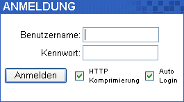

| Um in des WebMail einzuloggen, öffnen Sie den Webbrowser
, z.B. den Internet Explorer
und geben Sie die URL (
Uniform Resource Locator
) in der Addressleiste ein. Zum Beispiel, wenn Ihre Domain www.yourdomain.com ist , www.yourdomain.com/webmail oder www.yourdomain.com/openwebmail.
Wie auch immer, dies ist nicht überall anwendbar. Wenn Sie keinen
Zugang zu Ihrem WebMail bekommen können, wenden Sie sich an Ihren Systemadministrator.
Wenn Sie Ihr WebMail gefunden haben, werden Sie mit einem ähnlichen Login begrüßt wie in diesem Beispiel:
|
 |
Geben Sie Ihren Benutzernamen (oder ID) in dem Textfeld Benutzername:, und Ihr Password im Feld Kennwort: an.
Achtung: Ihr Username muss nicht zwingend mit Ihrer E-Mailadresse
übereinstimmen. Wenn Sie Ihren Usernamen nicht kennen, kontaktieren Sie
bitte Ihren Systemadministrator. |
Beispiel:
| Domain: | www.muppetlabs.com |
| Email: | bunson@muppetlabs.com |
| UserID: | bhoneydew |
| Password: | Burner |
Wenn Sie es wünschen, können Sie die Checkbox "Login merken" neben
dem Loginbutton auswählen. Dann wird beim nächsten Login der
Benutzername automatisch eingefügt, und Sie brauchen nur noch das
Password eingeben. Der Internet Explorer merkt sich auch das Password,
damit wird Ihr Login schnell und einfach.
Haben Sie beides - Username und Password -eingegeben, klicken Sie
auf "Anmelden" oder betätigen Sie die Eingabetaste. Haben Sie Username und
Password korrekt eingegeben, werden Sie direkt in Ihre Inbox
weitergeleitet.
Loggen Sie sich zum ersten Mal in Ihr Webmail ein, müssen Sie Ihre Grundeinstellungen eingeben. Siehe Grundeinstellungen
. Sollten Sie diese bereits eingegeben haben, gehen Sie weiter zu: Benutzen der Inbox / Posteingang
. |